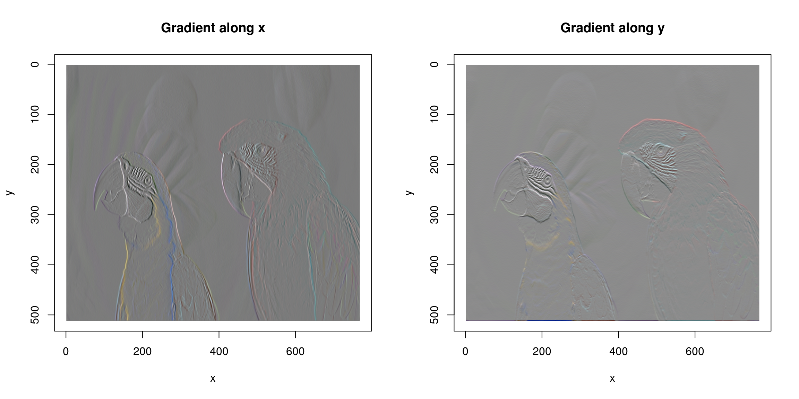
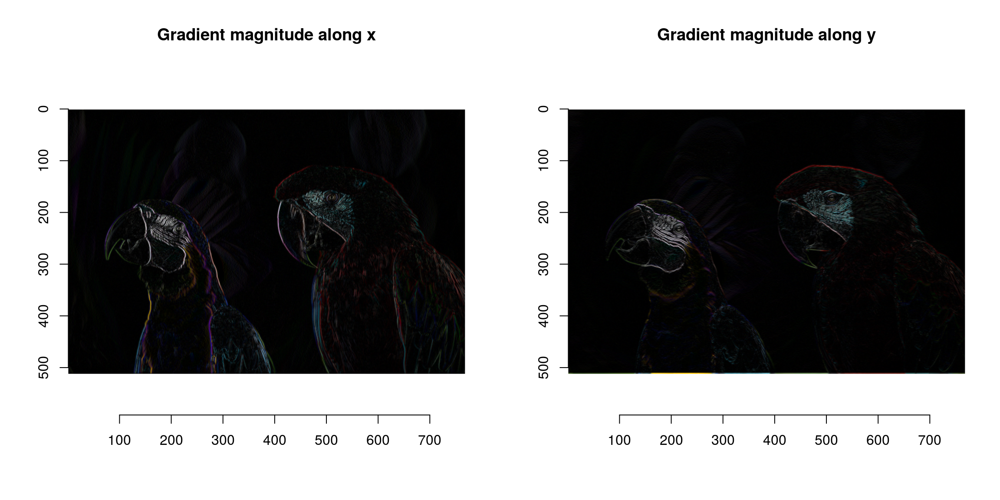
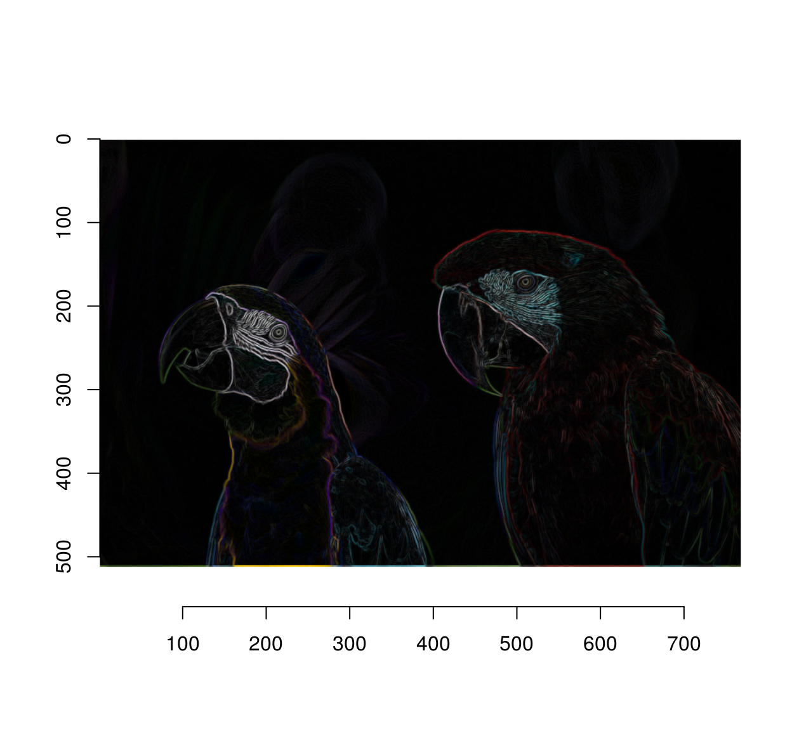
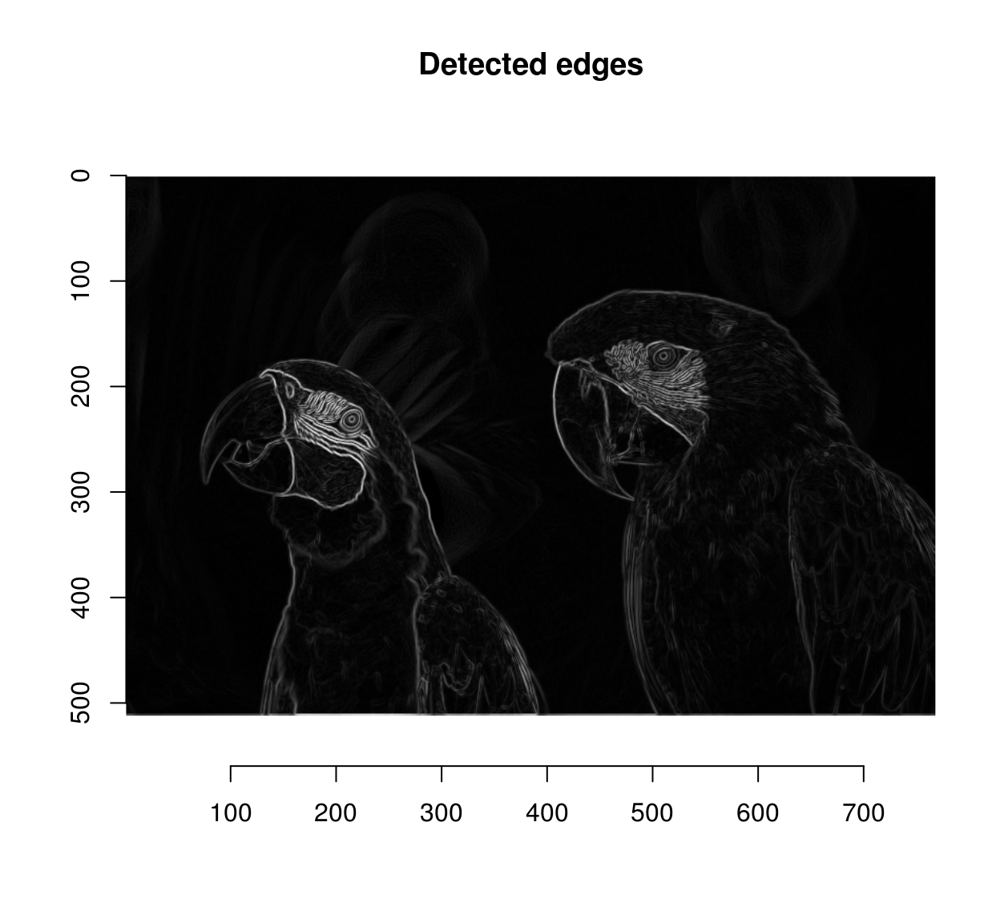
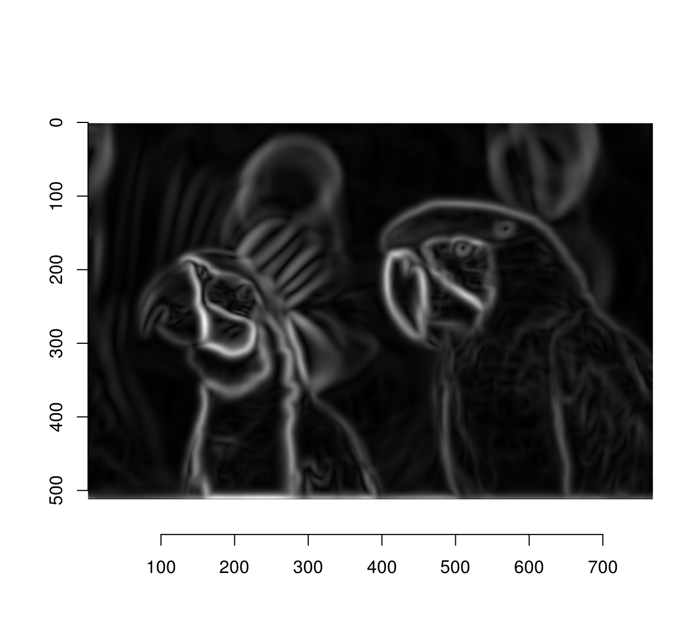
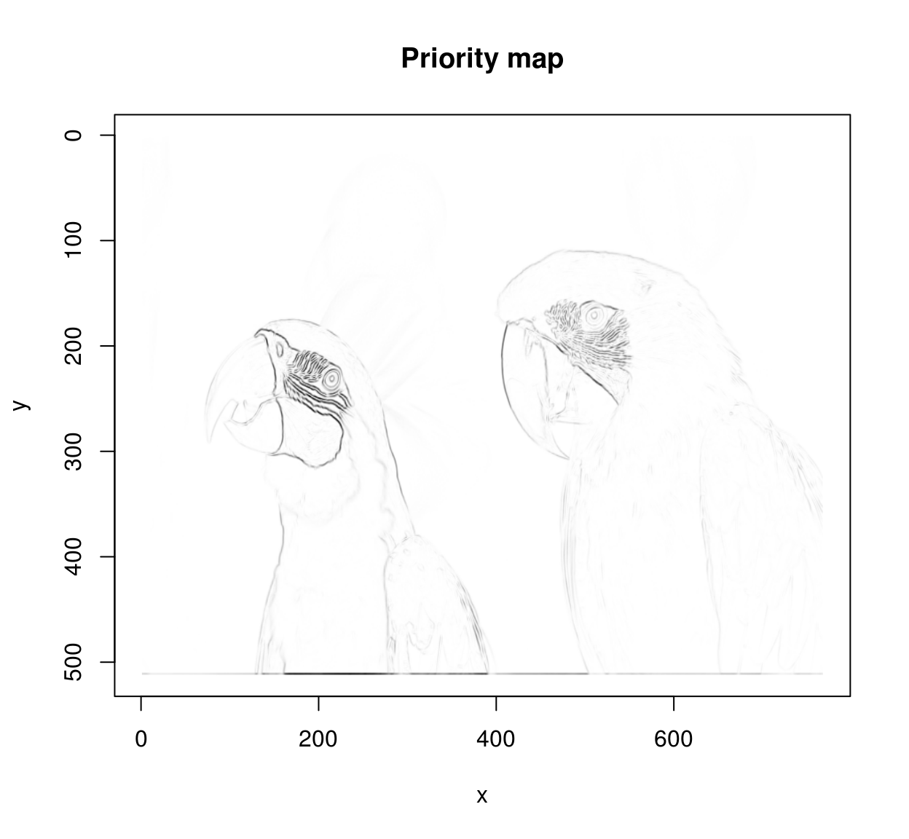
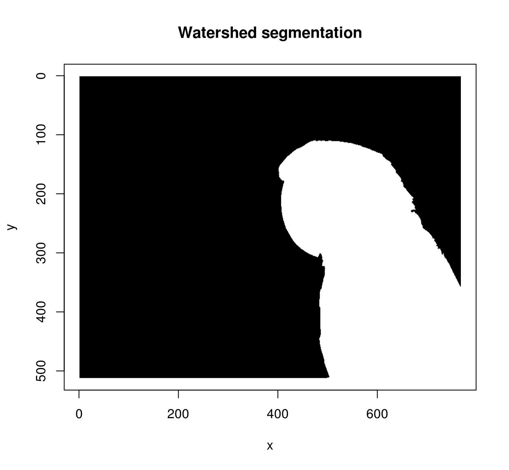
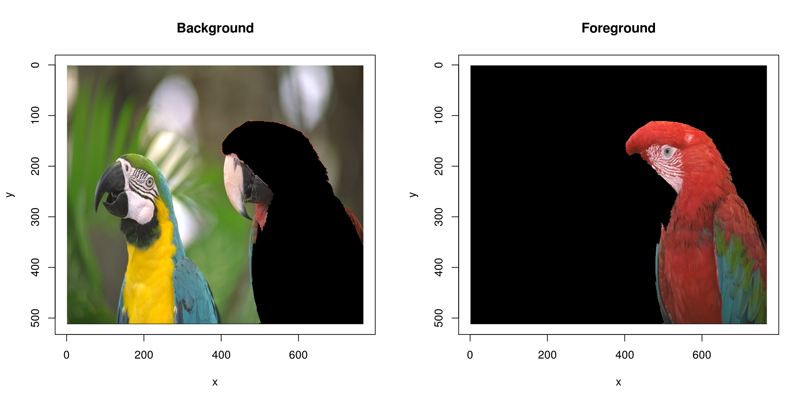

Simon Barthelmé (GIPSA-lab, CNRS)
The idea for this tutorial is borrowed from a blog post by David Tschumperlé. The goal is to select by hand a few points in the foreground of an image, a few points in the background, and let software do the rest.
The initial locations (blue and red dots) are called seed points. The way the algorithm works is by spreading region labels outwards from the seed points, but stopping at object boundaries. The first step is to do some edge detection, in order to infer object boundaries. Edges are regions in the image where the luminance changes a lot, so a traditional recipe for edge detection is to use the image gradient:
grad <- imgradient(parrots,"xy")
str(grad)## List of 2
## $ x: cimg [1:768, 1:512, 1, 1:3] 0.00139 0.00612 0.0022 -0.00172 0.00254 ...
## $ y: cimg [1:768, 1:512, 1, 1:3] 0.01119 0.00923 0.00646 0.00335 0.00287 ...
## - attr(*, "class")= chr [1:2] "imlist" "list"layout(t(1:2))
plot(grad$x,main="Gradient along x")
plot(grad$y,main="Gradient along y")
What we now have is a list of two images, one corresponding to the gradient in the x direction and the gradient in the y dimension. Both are computed across the RGB channels separately.
The image gradient isn’t quite what we need yet, since a light-to-dark edge will have negative gradient while a dark-to-light edge will have positive gradient. A good solution is to square the gradient:
grad.sq <- grad %>% llply(function(v) v^2)
layout(t(1:2))
plot(sqrt(grad.sq$x),main="Gradient magnitude along x")
plot(sqrt(grad.sq$y),main="Gradient magnitude along y")
Since we don’t care about the direction of the gradient we can just sum the two:
grad.sq <- add(grad.sq) #Add (d/dx)^2 and (d/dy)^2
plot(sqrt(grad.sq))
and finally we combine all three colour channels by summing:
edges <- imsplit(grad.sq,"c") %>% add
plot(sqrt(edges),main="Detected edges")
We have too many edges: for example, the edges around the eyes are spurious (they’re not true object boundaries). A way of mitigating the problem is to operate at a lower resolution. I’ll wrap everything into a function
#Sigma is the size of the blur window.
detect.edges <- function(im,sigma=1)
{
isoblur(im,sigma) %>% imgradient("xy") %>% llply(function(v) v^2) %>% add %>% imsplit("c") %>% add
}
detect.edges(parrots,5) %>% sqrt %>% plot
The next step is to use the watershed algorithm for label propagation. The watershed algorithm propagates labels (non-zero pixels) to their non-labelled (zero-valued) neighbours according to a priority map. Labels get propagated first to neighbours with high priority. Here we’re going to give higher priority to non-edge neighbouts. David Tschumperlé uses the following heuristic:
pmap <- 1/(1+edges) #Priority inv. proportional to gradient magnitude
plot(pmap,main="Priority map") #Nice metal plate effect! 
The other element needed for the watershed transform is an image of the same size as pmap, with a few labelled (non-zero) pixels. We’ll start with two:
seeds <- imfill(width(pmap),height(pmap)) #Empty image
seeds[400,50,1,1] <- 1 #Background pixel
seeds[600,450,1,1] <- 2 #Foreground pixeland we can now run the watershed transform:
wt <- watershed(seeds,pmap)
plot(wt,main="Watershed segmentation")
We can use the result as a mask:
mask <- add.colour(wt) #We copy along the three colour channels
layout(t(1:2))
plot(parrots*(mask==1),main="Background")
plot(parrots*(mask==2),main="Foreground")
Not perfect but pretty good already!